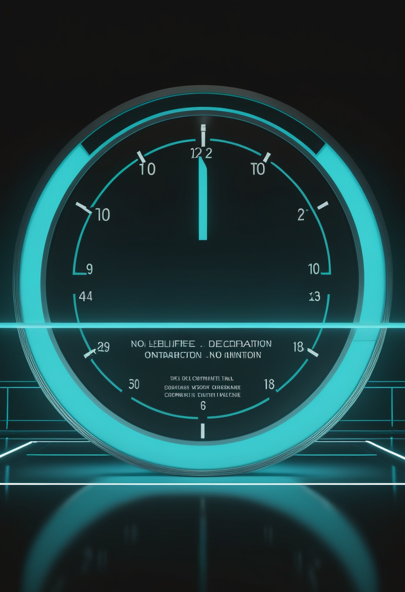
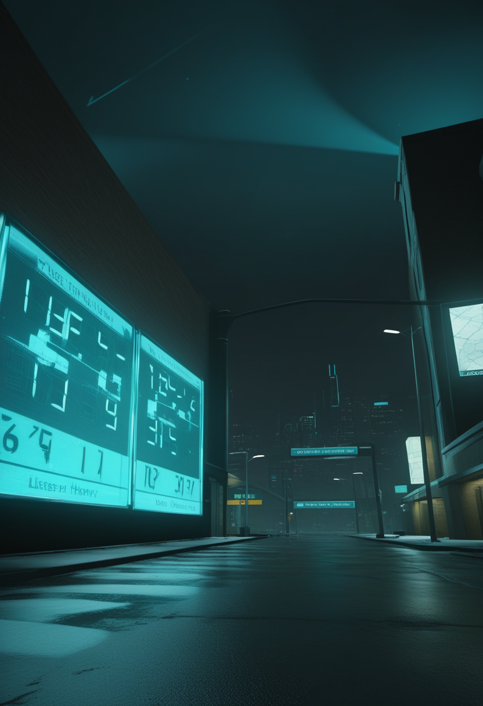

月曜日の便り。ウガンダでは自国のエボラ流行の終息宣言に向けたカウントダウンが4日目を迎える一方、同じ国で6月30日に確認されたマールブルグウイルス病はWHOの要請にもかかわらず情報が途絶えたまま。隣国DRCのエボラは確定2,124例・死者828例で高止まりし、死者の9割超が医療機関到達前に亡くなっていたことも判明した。WHOパンデミック条約の病原体データ共有ルール交渉は2027年へ越年。BCIの世界ではParadromicsが新型BCI「Connexus」の初ヒト植込みを実施し、Tobiiは専用ハードウェア不要のWebカメラ視線計測を研究者向けに展開した。SMAの世界では、英国が新生児スクリーニングの恒久化を制度設計に落とし込み、米国はアピテグロマブの優先審査が進み、日本は自治体ごとの公費実施が着実に広がっている。宇宙ではJWSTが初期宇宙の巨大ブラックホールを直接計量し、インドの民間企業が米中に続き軌道打ち上げに成功、CERNは次世代加速器への改修を正式に開始した。人類史の分野では、全脳エミュレーションの標的がハエからマウスへと移り、脳を模す「デジタルツイン」の研究がBCIとの融合を提案している。

7/19号の続報 ― ウガンダのブンディブギョ型エボラ流行(確定20例・死者2例)は7月16日に最後の患者を退院させ、終息宣言に必要な42日間のカウントダウンが本日4日目を迎えた。だが同じ国のチェゲグワ県で6月30日に確認されたマールブルグウイルス病は、WHOが繰り返し状況報告を求めているにもかかわらず政府からの続報がなく、症例・死者数は非公表のまま(要確認)。隣国DRCのブンディブギョ型エボラは確定2,124例・死者828例(7月15日時点)で高止まりし、週末を挟み新規の公式更新も止まっている。WHOアフリカ地域事務局の直近シットレップでは、調査済みの死者の92.3%が医療機関に到達する前に地域社会内で死亡していたことも判明した。同じフィロウイルス科の感染症を巡り、封じ込めの成功・情報の空白・検知の遅れという三つの現実が、同じ週・近接する地域に同居している。
Scholar Rock社の筋肉標的薬アピテグロマブは、米FDAの優先審査(判定日9/30)が予定通り進行中。一方、欧州医薬品庁(EMA)の医薬品委員会(CHMP)は6月22〜25日の会合でも意見を採択しておらず、同社が示していた「2026年半ば」承認見通しに対し欧州側の判断はなお持ち越されている。次回CHMP会合での取り扱いは未公表(要確認)。
7/19号の続報 ― 英国政府が7月16日に発表したイングランド全域でのSMA新生児スクリーニング展開について、NHSの新生児血液スポット検査へ恒久的に追加すべきかを判断する全国評価プログラムと並行実施される制度枠組みが新たに判明した。残る6カ所の検査施設は2027年10月から対応開始予定で、出生地によらない全国アクセスを目指す。スコットランドは3月に先行導入済み。
こども家庭庁は2023年11月、SMAとSCID(重症複合免疫不全症)を実証事業の対象に加える方針を決定。神奈川県・横浜市・川崎市・相模原市は2024年10月1日採血分から、大阪市は2024年3月1日出生分から、広島県は2022年7月から(先行パイロット)、それぞれ公費でSCID・SMA検査を実施している。日本マススクリーニング学会が2026年5月25日時点の都道府県別実施状況を公開しているが、全国一律の法定スクリーニングにはまだ至っていない(要確認、全国導入時期は未定)。
承認審査(米国)・恒久化の制度設計(英国)・自治体単位の実証(日本)――「早期発見・早期治療」という同じ目標に向け、各国がそれぞれ異なる段階の課題と向き合っている。
Paradromics社は7月上旬、FDA承認済みの早期実行可能性試験「Connect-One」の一環として、ミシガン大学病院で自社BCI「Connexus」の初回ヒト植込みを実施した。発話再建や重度運動障害者のコンピュータ操作を安全に実現できるかを検証する。同7日には、埋込み型医療機器分野で約30年の経験を持つWilliam J. Marks Jr.医師を最高臨床責任者(CCO)に招聘し、臨床戦略と規制対応の体制を強化したと発表した。
MITテクノロジーレビューは6月19日付で、Neuralink・Synchron・Paradromics・Precision Neuroscienceなど複数社の臨床試験が同時並行で規模を拡大し、研究段階から規制承認を見据えたピボタル試験段階へ移行しつつある業界動向をまとめた。ただし2026年半ば時点で、商用承認済みのBCIは依然として存在しないと指摘している。
視線入力大手Tobiiは6月、自社の「Tobii Nexus」技術を土台にしたWebカメラベースの視線計測ツールを研究者向けに提供開始した。専用ハードウェアなしで注視領域(Areas of Interest)を計測できる遠隔・分散型のオンライン調査版がまず利用可能になり、対面・管理環境向けのローカル版は2026年後半に追加予定。埋込み型BCIとは異なる、非侵襲の視線入力の裾野を広げる動きとなる。
侵襲的な埋込み型BCI(Paradromics)の治験が離陸期に入る一方、Tobiiは非侵襲の視線入力を専用ハードウェア無しで裾野へ広げている。「思考で操作する」技術は、埋込み・非埋込み双方の速度で実用化に近づいている。
7/19号の続報 ― ウガンダのブンディブギョ型エボラ流行(確定20例・死者2例)は7月16日に最後の患者を退院させ、終息宣言に必要な42日間のカウントダウンが本日4日目を迎えた。DRC側で感染が続く限り新規輸入例が出れば日数はゼロにリセットされる。一方、同国チェゲグワ県で6月30日に確認されたマールブルグウイルス病(致死率の高い別のフィロウイルス)は、WHOが7月16日時点で政府に繰り返し状況報告を要請しているが続報がなく、症例・死者数は非公表のまま(要確認)。
WHOパンデミック協定の第7回政府間作業部会(7月6〜17日、ハイブリッド開催)は、病原体データ共有の枠組みを定めるPABS(病原体アクセス・利益配分)附属書の交渉をまとめきれず終了した。テドロス事務局長は「断念するには重要すぎる」と継続の意志を示したが、最終決着は2027年5月の第80回世界保健総会へ持ち越された。エボラ・マールブルグが同時進行する最中、国際的な病原体共有ルールの空白がなお続く。
7/19号の続報 ― WHOが公表しているDRCのブンディブギョ型エボラの最新値は確定2,124例・死者828例(7月15日時点)のままで、週末を挟み7月16日以降の新規公式更新は確認できていない(次回シットレップ待ち、要確認)。WHOアフリカ地域事務局の直近シットレップ(7月12日時点)によれば、調査済みの死者430例のうち92.3%が医療機関に到達する前・地域社会内で死亡しており、検知・搬送の遅れが依然深刻であることを裏付けている。
同じフィロウイルス科の感染症を巡り、ウガンダでは封じ込めの秒読みと情報空白が同居し、DRCでは検知と搬送の遅れが死亡率を押し上げている。国際的なデータ共有ルールの空白(PABS交渉越年)も、対応力の底上げを妨げる一因になっている。
JWSTを用いた研究チームは、「小さな赤い点(little red dots)」と呼ばれる初期宇宙の天体の一つで、ガスの運動速度から中心天体の質量を直接測定する手法により、太陽質量の約5,000万倍のブラックホールを検出した。母銀河の恒星質量がこのブラックホール自体の質量を下回るという逆転現象が確認され、一部の超大質量ブラックホールは母銀河が形成される前から存在し成長していた可能性を示す成果として、Nature誌に掲載された。
インドのSkyroot Aerospace(2018年創業)は7月18日、民間開発ロケットとして同国初となる軌道打ち上げ「Vikram-1」(全長約22m、ペイロード最大350kg)を実施した。サティシュ・ダワン宇宙センターから打ち上げ、約15分後に高度450kmの軌道へ複数の顧客ペイロードを投入する「Mission Aagaman」を成功させ、インドは米国・中国に次いで民間企業による軌道打ち上げ能力を持つ3カ国目となった。
7/17号の続報 ― 6月29日に長期停止(LS3)入りしたと伝えられていたCERNのLHCについて、CERNは7月、2026年分の最終物理ランを終えて正式に「さよなら」を告げたと発表した。高輝度LHC(HL-LHC、2030年再稼働予定)へ向けた大規模な改修・据付作業が今後本格化する。
見えないものを測る週。ブラックホールの直接計量、CERNの次世代加速器への布石、そしてインドの新興宇宙企業の軌道投入と、天文・素粒子・宇宙産業がそれぞれ異なるスケールで前進した。
2024年にNature誌へ発表されたショウジョウバエ全脳エミュレーション(FlyWireコネクトームベース、約14万ニューロン・5000万シナプス)の成功を踏まえ、開発元のEon Systemsは次の目標をマウス脳(推定約7,000万ニューロン、ハエの約560倍規模)のデジタル化に定めたと自社アップデートで説明した。公表時期は明記されていない(要確認)。膨張顕微鏡法による配線マップと、数万時間規模のカルシウム・電位イメージングによる活動データを組み合わせる計画という。
2026年1月公開のarXiv論文「Neural Digital Twins」は、個々の脳活動パターンを模倣する計算モデル(デジタルツイン)を次世代BCIのデコーディングに組み込む枠組みを提案した。同時に分野を俯瞰した「State of Brain Emulation Report 2025」(2025年10月公開)は、研究の重心が生データ収集(ハエ・ゼブラフィッシュはほぼ完全なコネクトームを保有)から、構造データを機能する模倣へ変換する「検証」という、より難しい課題へ移ったと総括している。
「意識のアップロード」という遠い目標より先に、ハエ→マウスという地道なスケールアップと、BCI応用に直結する「デジタルツイン」実装が研究の主戦場になっている。
2026年7月20日、ウガンダは自国のエボラ流行の終息へ向けたカウントダウンを4日目まで刻んだが、同じ国で静かに進行するマールブルグウイルス病の情報空白は、封じ込めの成功だけでは測れない現実を映し出す。隣国DRCの高止まりする死者数と、医療到達前に失われる命の多さもまた、統計の裏にある課題を示している。それでもBCIは初ヒト植込みという一歩を踏み出し、SMAの早期発見網は各国それぞれの速度で編み目を細かくし、宇宙と人類史の探求は今週も静かに前進を続けた。
では、また明日の朝に。 — JaH